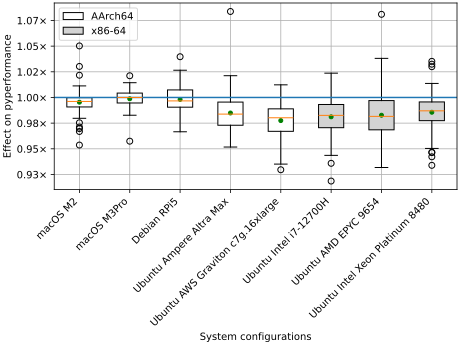
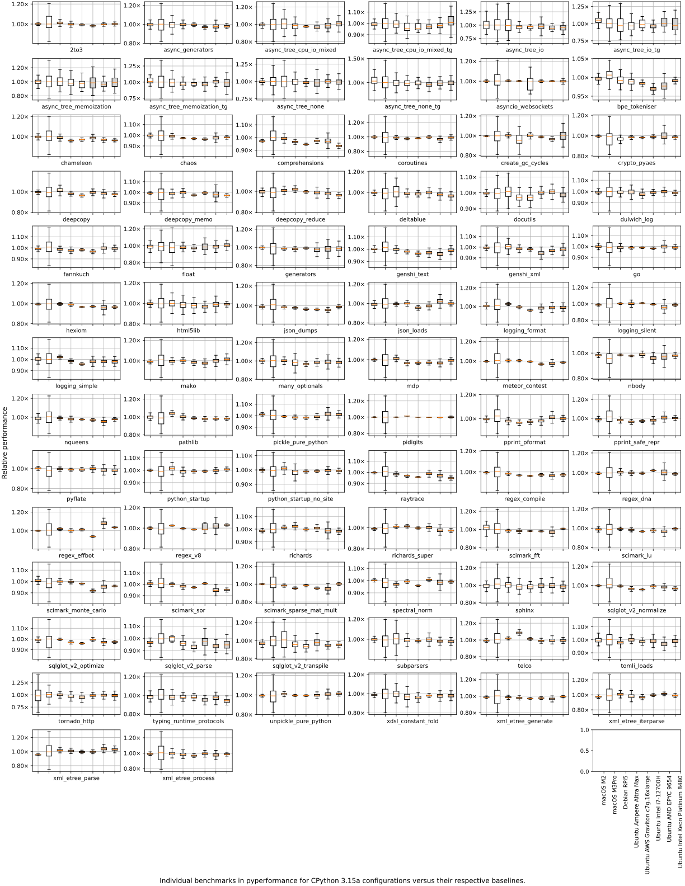

PEP 831 – Frame Pointers Everywhere: Enabling System-Level Observability for Python
- Author:
- Pablo Galindo Salgado <pablogsal at python.org>, Ken Jin <kenjin at python.org>, Savannah Ostrowski <savannah at python.org>
- Discussions-To:
- Discourse thread
- Status:
- Draft
- Type:
- Standards Track
- Created:
- 14-Mar-2026
- Python-Version:
- 3.15
- Post-History:
- 13-Apr-2026
Table of Contents
- Abstract
- Motivation
- What Are Frame Pointers?
- Profilers Are Slower and Less Accurate Without Frame Pointers
- Debuggers Benefit from Frame Pointers
- The Kernel’s Stack Unwinder Only Uses Frame Pointers
- The Perf Trampoline Feature Requires Frame Pointers
- Distributions Are Waiting for Upstream
- Mixed Python/C Profiling Requires a Continuous Chain
- The JIT Compiler Needs Frame Pointers to Be Debuggable
- The Ecosystem Has Already Adopted Frame Pointers
- Specification
- Rationale
- Backwards Compatibility
- Security Implications
- How to Teach This
- Reference Implementation
- Rejected Ideas
- Change History
- Footnotes
- Appendix
- Copyright
Abstract
This PEP proposes two things:
- Build CPython with frame pointers by default on platforms that support
them. The default build configuration is changed to compile the
interpreter with
-fno-omit-frame-pointerand-mno-omit-leaf-frame-pointer. The flags are added toCFLAGS, so they apply to the interpreter itself and propagate to C extension modules built against this Python viasysconfig. An opt-outconfigureflag (--without-frame-pointers) is provided for deployments that require maximum raw throughput. - Strongly recommend that all build systems in the Python ecosystem build with frame pointers by default. This PEP recommends that every compiled component that participates in the Python call stack (C extensions, Rust extensions, embedding applications, and native libraries) should enable frame pointers. A frame-pointer chain is only as strong as its weakest link: a single library without frame pointers breaks profiling, debugging, and tracing for the entire process.
Frame pointers are a CPU register convention that allows profilers, debuggers,
and system tracing tools to reconstruct the call stack of a running process
quickly and reliably. Omitting them (the compiler’s default at -O1 and
above) prevents these tools from producing useful call stacks for Python
processes, and undermines the perf trampoline support CPython shipped in 3.12.
The measured overhead is under 2% geometric mean for typical workloads (see Backwards Compatibility for per-platform numbers). Multiple major Linux distributions, language runtimes, and Python ecosystem tools have already adopted this change. No existing PEP covers this topic; CPython issue #96174 has been open since August 2022 without resolution.
Motivation
Python’s observability story (profiling, debugging, and system-level tracing) is fundamentally limited by the absence of frame pointers. The core motivation of this PEP is to make Python observable by default, so that profilers are faster and more accurate, debuggers are more reliable, and eBPF-based tools are functional without workarounds.
Today, users who want to profile CPython with system tools must rebuild the interpreter with special compiler flags, a step that most users cannot or will not take. The Fedora 38 frame-pointer proposal [2] highlights this as the key problem: without frame pointers in the default build, developers must “recompile their program with sufficient debugging information” and “reproduce the scenario under which the software performed poorly,” which is often impossible for production issues. Ubuntu 24.04’s analysis [3] makes the same argument: frame pointers “allow bcc-tools, bpftrace, perf and other such tooling to work out of the box.” The goal of this PEP is to make that the default experience for Python.
The performance wins that profiling enables far outweigh the modest overhead of frame pointers. As Brendan Gregg notes: “I’ve seen frame pointers help find performance wins ranging from 5% to 500%” [1]. These wins come from identifying hot paths in production systems; they are not about CPython’s own overhead, but about what profiling enables across the full stack. A 0.5-2% overhead that unlocks such insights is a favourable trade.
What Are Frame Pointers?
When a program runs, each function call creates a stack frame, a block of
memory on the call stack that holds the function’s local variables, its
arguments, and the address to return to when the function finishes. The call
stack is the chain of all active stack frames: it records which function
called which, all the way from main() to the function currently executing.
A frame pointer is a CPU register (for example, %rbp on x86-64, x29 on AArch64)
that each function sets to point to the base of its own stack frame. Each
frame also stores the previous frame pointer, creating a linked list through
the entire call stack:
┌──────────────────┐
│ main() │ ◄─── frame pointer chain
│ saved %rbp ─────┼──► (bottom of stack)
├──────────────────┤
│ PyRun_String() │
│ saved %rbp ─────┼──► main's frame
├──────────────────┤
│ _PyEval_Eval…() │
│ saved %rbp ─────┼──► PyRun_String's frame
├──────────────────┤
│ call_function() │ ◄─── current %rbp
│ saved %rbp ─────┼──► _PyEval_Eval's frame
└──────────────────┘
Stack unwinding is the process of walking this chain to reconstruct the call
stack. Profilers do it to find out where the program is spending time;
debuggers do it to show backtraces; crash handlers do it to produce useful
error reports. With frame pointers, unwinding is simply following pointers: read
%rbp, follow the link, repeat. It requires no external data.
At optimisation levels -O1 and above, GCC and Clang omit frame pointers by
default [14]. This frees the %rbp register for general use,
giving the optimiser one more register to work with. On x86-64 this is a gain
of one register out of 16 (about 7%). The performance benefit is small
(typically a few percent) but it was considered worthwhile when the convention
was established for 32-bit x86, where the gain was one register out of 6
(~20%). See Detailed Performance Analysis of CPython with Frame Pointers
for a full breakdown by platform and workload.
Without frame pointers, the linked list does not exist. Tools that need to
walk the call stack must instead parse DWARF debug information (a complex,
variable-length encoding of how each function laid out its stack frame) or,
on Windows, .pdata / .xdata unwind metadata. This is slower, more
fragile, and impossible in some contexts (such as inside the Linux kernel).
In the worst case, tools simply produce broken or incomplete results.
Here is a concrete example. A perf profile of a Python process without
frame pointers typically shows:
100.00% python libpython3.14.so _PyEval_EvalFrameDefault
|
---_PyEval_EvalFrameDefault
(truncated, no further frames available)
The same profile with frame pointers shows the full chain:
100.00% python libpython3.14.so _PyEval_EvalFrameDefault
|
---_PyEval_EvalFrameDefault
|
+--PyObject_Call
| PyRun_StringFlags
| PyRun_SimpleStringFlags
| Py_RunMain
| main
|
+--call_function
fast_function
...
The first trace is useless for diagnosing performance problems; the second tells the developer exactly what code path is hot.
Profilers Are Slower and Less Accurate Without Frame Pointers
Statistical profilers (perf, py-spy, Austin, Pyroscope, Parca, and others)
work by periodically sampling the call stack of a running process. With frame
pointers, this sampling is a simple pointer chase: the profiler reads %rbp,
follows the chain, and reconstructs the full call stack in microseconds. This
is fast enough to sample at 10,000 Hz in production with negligible overhead.
Without frame pointers, the profiler must fall back to DWARF unwinding, a
method that parses compiler-generated debug metadata to reconstruct the call
chain. perf --call-graph dwarf copies 8 KB of raw stack per sample to
userspace, then parses .eh_frame debug sections offline to reconstruct each
frame. In a direct measurement on CPython 3.15-dev, profiling the same
workload at the same sampling rate produced a 5.6 MB perf.data file with
frame-pointer unwinding versus a 306.5 MB file with DWARF unwinding (55x
larger) for the same ~38,000 samples.
DWARF mode also requires offline post-processing with perf report (which
itself can consume up to 17% of CPU [11]), silently truncates stacks
deeper than the copy window, and cannot be used at high sampling rates in
production. The result: profiling Python services in production requires
either accepting broken stacks or accepting orders-of-magnitude more overhead
and storage.
To quantify the difference, we benchmarked the time to unwind a 64-frame call
stack on x86-64 Linux using frame-pointer walking (%rbp chain chase, the
method used by the kernel’s perf_events and bpf_get_stackid()) and
three widely-used DWARF-based unwinders: libunwind [26], glibc’s
backtrace(), and framehop [27] (the Rust unwinder used by samply
[28]). Each unwinder was tested against the same program compiled with
and without -fno-omit-frame-pointer.
Frame-pointer walking completed a 64-frame unwind in 116 ns, on average
210x faster than the DWARF alternatives tested. Without frame pointers, the
frame-pointer walk recovers zero usable frames (the %rbp chain does not
exist), while the DWARF unwinders continue to function at essentially the same
cost.
At a typical production sampling rate of 10,000 Hz, frame-pointer unwinding at this depth consumes roughly 1.2 ms of CPU per second (0.12%), while the slowest DWARF unwinder tested consumes over 240 ms per second (24%). DWARF-based profiling works and is how most profilers operate today, but it carries substantially higher overhead than frame-pointer unwinding.
For BPF-based profilers (bpftrace, bcc’s profile.py, Pyroscope, Parca,
Elastic Universal Profiling), the situation is worse. The BPF helper
bpf_get_stackid(), the foundation of every eBPF profiler in production
today, walks the frame-pointer chain and has no fallback to DWARF. Without
frame pointers, these tools simply produce truncated or empty stacks for Python
processes. The Linux kernel has no DWARF unwinder and, per Linus Torvalds,
will not gain one [15]; the kernel developed its own ORC format for
internal use instead.
The impact extends beyond CPU profiling. Off-CPU flame graphs (used to
diagnose latency caused by I/O waits, lock contention, and scheduling delays)
rely on the same bpf_get_stackid() helper to capture the stack at the point
where a thread blocks. As Brendan Gregg notes, off-CPU flame graphs “can be
dominated by libc read/write and mutex functions, so without frame pointers end
up mostly broken” [1]. For Python services where latency matters
more than raw CPU throughput, off-CPU profiling is often the most valuable
diagnostic tool, and it is completely non-functional without frame pointers.
Debuggers Benefit from Frame Pointers
Debuggers such as GDB and LLDB can unwind stacks without frame pointers. They
use multiple strategies: DWARF CFI metadata (.debug_frame and .eh_frame
sections), assembly prologue analysis, compact unwind info (on macOS), and
various platform-specific heuristics. In typical interactive debugging
sessions with full debug info available, these mechanisms work well.
Frame pointers nonetheless make debugging faster and more robust in several important scenarios.
Production deployments commonly strip debug symbols or ship without matching
debuginfo packages. When DWARF metadata is unavailable, debuggers cannot
unwind past the gap. Frame pointers survive binary stripping and require no
side-channel data, allowing a backtrace to succeed where DWARF-based unwinding
cannot. This matters most for core dump analysis: when analysing a crash from
a production process, debuggers have one chance to reconstruct the stack, and
if debug packages are mismatched or absent for some shared objects, DWARF
unwinding stops at the first gap while frame pointers let the debugger continue
through it.
CPython’s JIT stencils and perf trampoline stubs contain no DWARF metadata. Frame pointers are the only way for a debugger to unwind through these frames.
Tools like pystack, which analyse core files and remote processes using elfutils (libdw), can walk frame pointers without any additional metadata, but without them they require debug symbols for every shared object in the process, a condition rarely met in production containers.
Frame-pointer unwinding is also substantially faster. As shown in the benchmarks above, a frame-pointer walk completes a 64-frame unwind in 116 ns, roughly 210x faster than the DWARF alternatives. For debugger operations that unwind repeatedly (e.g. conditional breakpoints that evaluate at every hit), this difference matters.
The Kernel’s Stack Unwinder Only Uses Frame Pointers
The Linux kernel provides two built-in mechanisms for capturing userspace call
stacks: the perf_events subsystem and the eBPF helper functions. Both use
the same kernel-side frame-pointer unwinder and neither has any fallback to
DWARF.
perf_events is the kernel subsystem behind perf record. When perf
is configured with --call-graph fp (frame pointer), the kernel walks the
userspace frame-pointer chain directly from the interrupt handler that captured
the sample. This happens in kernel context, at interrupt time, with no
userspace cooperation. The unwinder follows the %rbp chain, reading each
saved frame pointer from the target process’s stack, until it reaches the
bottom of the stack or a configurable depth limit. The result is a compact
array of return addresses that perf resolves to symbols offline. This is
the lowest-overhead path: no data is copied to userspace beyond the address
array itself, and the kernel performs the walk in microseconds.
When frame pointers are absent, perf_events cannot unwind the stack
in-kernel at all. The only alternative is --call-graph dwarf, which does
not actually unwind in-kernel; instead, it copies up to 8 KB of raw stack
memory per sample into the perf.data ring buffer, and the unwinding is
performed offline in userspace by perf report. This is not kernel-side
unwinding; it is a bulk memory copy followed by offline DWARF interpretation.
eBPF is a Linux kernel technology that allows small programs to run safely inside the kernel, enabling low-overhead system monitoring, profiling, and tracing. Modern production profilers (Pyroscope, Parca, Datadog, Elastic) increasingly use eBPF for continuous, always-on profiling.
The kernel provides two BPF helper functions for capturing call stacks:
bpf_get_stackid(ctx, map, flags)walks the frame-pointer chain and returns a hash key into a stack-trace map. It is the standard way to capture call stacks in eBPF profilers, tracing tools, and bpftrace one-liners. It walks frame pointers and nothing else: there is no DWARF fallback, no SFrame fallback, no alternative unwinding path.bpf_get_stack(ctx, buf, size, flags)writes the raw frame addresses into a caller-provided buffer. Likebpf_get_stackid(), it walks the frame-pointer chain exclusively.
Both helpers execute inside the kernel’s BPF runtime, which enforces strict
safety constraints: bounded execution time, no unbounded loops, no arbitrary
memory access, and no calls to complex library code. These constraints make it
structurally impossible to implement a general-purpose DWARF unwinder as a BPF
helper. DWARF unwinding requires parsing variable-length instructions from
.eh_frame sections, evaluating a stack machine (the DWARF Call Frame
Information state machine), and following arbitrarily deep chains of CIE/FDE
records, none of which can pass the BPF verifier.
Without frame pointers, bpf_get_stackid() and bpf_get_stack() produce
truncated or empty results for Python processes. Every eBPF profiler in
production today (Pyroscope, Parca, Datadog’s continuous profiler, Elastic
Universal Profiling, bpftrace, bcc’s profile.py) ultimately calls one of
these two helpers. When they fail, the profiler has no stack to report.
Some vendors (Polar Signals, Elastic, OpenTelemetry’s eBPF profiler, Yandex’s
Perforator [24]) have implemented DWARF-in-eBPF as a workaround, but
this approach is substantially slower, more complex, and cannot use the
kernel’s built-in stack-walking helpers. Instead of calling
bpf_get_stackid(), these implementations parse .eh_frame sections in
userspace, convert them to compact stack-delta lookup tables, load those tables
into BPF maps, and then evaluate the tables in a custom BPF program that
manually reads stack memory with bpf_probe_read_user(). This requires 500+
lines of BPF code (compared to fewer than 50 for the frame-pointer path),
demands per-process startup overhead to parse and load debug info, consumes
significant BPF map memory for the stack-delta tables, and is cutting-edge
vendor-specific infrastructure not available in standard tooling such as
bpftrace, bcc, or perf [12].
For the vast majority of eBPF use cases (bpftrace one-liners, bcc tools, custom BPF programs for production monitoring), frame pointers are the only viable unwinding mechanism because they are the only mechanism the kernel’s built-in helpers support.
CPython’s own documentation already states the recommended fix:
For best results, Python should be compiled withCFLAGS="-fno-omit-frame-pointer -mno-omit-leaf-frame-pointer"as this allows profilers to unwind using only the frame pointer and not on DWARF debug information.
Production profiling tools echo this guidance. Grafana Pyroscope’s troubleshooting documentation states: “If your profiles show many shallow stack traces, typically 1-2 frames deep, your binary might have been compiled without frame pointers” [25].
If the recommended configuration is -fno-omit-frame-pointer, it should be
the default.
The Perf Trampoline Feature Requires Frame Pointers
Python 3.12 introduced -Xperf (sys.activate_stack_trampoline), which
generates small JIT stubs that make Python function names visible to perf.
These stubs contain no DWARF information; the only way a profiler can walk
through them is via the frame-pointer chain. The -Xperf feature as shipped
in 3.12 therefore produces broken stacks on any installation that was not
explicitly rebuilt with -fno-omit-frame-pointer.
Python 3.13 added -Xperf_jit, a DWARF-based alternative, but it requires
perf >= 6.8, produces substantially larger data files than the
frame-pointer path, and is not suitable for continuous production profiling due
to its per-sample overhead.
Distributions Are Waiting for Upstream
Fedora 38 [2], Ubuntu 24.04 LTS [3], and Arch Linux have
all rebuilt their entire package trees with -fno-omit-frame-pointer
-mno-omit-leaf-frame-pointer. However, Ubuntu 24.04 LTS
explicitly exempted CPython:
In cases where the impact is high (such as the Python interpreter), we’ll continue to omit frame pointers until this is addressed.
The result is a circular dependency: the runtime most in need of frame pointers
for profiling is the one that major distributions leave without them, pending
an upstream fix. Red Hat Enterprise Linux and CentOS Stream also disable frame
pointers by default, investing instead in alternative approaches
(eu-stacktrace, SFrame) that are not yet production-ready (see
Alternatives to Frame-Pointer Unwinding). Users who install Python from
python.org, build from source, use pyenv, or work on Debian, RHEL, openSUSE, or
any other distribution that has not adopted frame pointers system-wide get no
frame pointers regardless of what their local distribution does. An upstream
default resolves this permanently.
Mixed Python/C Profiling Requires a Continuous Chain
Real Python applications spend substantial time in C extension modules: NumPy,
cryptographic libraries, compression, database drivers, and so on. For a
perf flame graph to show the full path from Python code through a C
extension and into a system library, the frame-pointer chain must be continuous
through the interpreter and through every extension in the call stack. A
gap at any point, whether in _PyEval_EvalFrameDefault or in a C extension,
breaks the chain for the entire process.
The need for a continuous chain is precisely why the flags must propagate to
extension builds. If only the interpreter has frame pointers but extensions do
not, the chain is still broken at every C extension boundary. By adding the
flags to CFLAGS as reported by sysconfig, extension builds that consume
CPython’s compiler flags (for example via pip install, Setuptools, or
other build backends) will inherit frame pointers by default. Extensions
and libraries with independent build systems still need to enable the same
flags themselves for the frame-pointer chain to remain continuous.
The JIT Compiler Needs Frame Pointers to Be Debuggable
CPython’s copy-and-patch JIT (PEP 744) generates native machine code at
runtime. Without reserved frame pointers in the JIT code, stack unwinding through
JIT frames is broken for virtually every tool in the ecosystem: GDB, LLDB,
libunwind, libdw (elfutils), py-spy, Austin, pystack, memray, perf, and
all eBPF-based profilers. Ensuring full-stack observability for JIT-compiled
code is a prerequisite for the JIT to be considered production-ready.
Individual JIT stencils do not need frame-pointer prologues; the entire JIT
region can be treated as a single frameless region for unwinding purposes.
What matters is that the JIT itself must reserve frame pointers, so
that the frame-pointer register (%rbp on x86-64, x29 on AArch64) is
reserved and not clobbered by stencil code. With frame pointers in the
JIT, most unwinders can walk through JIT regions without needing to inspect
individual stencils. This is a remarkably good outcome compared to other
JIT compilers (V8, LuaJIT, .NET CoreCLR, Julia, LLVM’s ORC JIT), which
typically require hundreds to thousands of lines of code to implement custom
DWARF .eh_frame generation, GDB JIT interface support
(__jit_debug_register_code), and per-unwinder registration APIs
(_U_dyn_register, __register_frame). See issue #126910 for
further discussion of frame pointers and the JIT.
The Ecosystem Has Already Adopted Frame Pointers
The shift toward frame pointers has already happened independently of CPython upstream, and at massive scale.
python-build-standalone, the hermetic Python distribution used by uv,
mise, rye, and many CI systems, enabled -fno-omit-frame-pointer on
all x86-64 and AArch64 Linux builds in early 2026 and shipped in uv 0.11.0
[13]. Gregory Szorc, the project’s creator, stated: “Frame pointers
should be enabled on 100% of x86-64 / aarch64 binaries in 2026. Full stop.” He
further argued: “We shouldn’t stop at enabling frame pointers in PBS: we should
advocate CPython enable them by default not only in the core interpreter but
also for compiled C extensions.” [13]
This means that a large and growing fraction of Python users (everyone using
uv python install, Astral’s GitHub Actions, or any tool that fetches
python-build-standalone binaries) is already running Python with frame
pointers. The interpreter they use daily already has frame pointers enabled;
this PEP makes the upstream default match that reality.
The python-build-standalone benchmarks measured 1-3% overhead across Python
3.11 through 3.15, with 1.1% on a non-tail-call build and up to 3.3% on the
tail-call interpreter [13]. These numbers are consistent with this PEP’s
first-party measurements and with Fedora/Ubuntu data.
Major Linux distributions (Fedora 38 [2], Ubuntu 24.04 [3], Arch Linux) have rebuilt their entire package trees with frame pointers. PyTorch, Node.js, Redis, Go, and .NET have all adopted frame pointers in their default builds (see Industry Consensus Has Shifted Decisively in the Rationale for the full list).
An upstream default aligns CPython with the reality that the ecosystem has already adopted.
Specification
Build System Changes
The following changes are made to configure.ac:
AX_CHECK_COMPILE_FLAG([-fno-omit-frame-pointer],
[CFLAGS="$CFLAGS -fno-omit-frame-pointer"])
AX_CHECK_COMPILE_FLAG([-mno-omit-leaf-frame-pointer],
[CFLAGS="$CFLAGS -mno-omit-leaf-frame-pointer"])
Using CFLAGS ensures:
- The flags apply to all
*.cfiles compiled as part of the interpreter: thepythonbinary,libpython, and built-in extension modules underModules/. - The flags are written into the
sysconfigdata, so that third-party C extensions built against this Python (viapip, Setuptools, or directsysconfigqueries) inherit frame pointers by default.
This is an intentional design choice. For profiling data to be useful, the frame-pointer chain must be continuous through the entire call stack. A gap at any C extension boundary is as harmful as a gap in the interpreter itself. By propagating the flags, CPython establishes frame pointers as the ecosystem-wide default for the Python stack.
-mno-omit-leaf-frame-pointer preserves the frame pointer even in leaf
functions. Without it, the compiler may drop the frame pointer in any function
that makes no further calls, even when -fno-omit-frame-pointer is set.
Fedora, Ubuntu, and Arch Linux all include this flag; it ensures a profiler
sampling inside a leaf function still recovers a complete call chain.
Opt-Out Configure Flag
A new configure option is added:
--without-frame-pointers
When specified, neither flag is added to CFLAGS. This is appropriate for
deployments that have measured an unacceptable regression on their specific
workload, or for distributions that inject frame-pointer flags at a higher
level and wish to avoid double-specification, analogous to Fedora’s per-package
%undefine _include_frame_pointers macro.
Extension authors who wish to override the default for a specific module can
pass -fomit-frame-pointer in their extra_compile_args or via
environment variables; the last flag on the command line wins under GCC and
Clang.
Ecosystem Impact
Because the flags are in CFLAGS, they propagate automatically to consumers
that build against CPython’s reported compiler flags, such as C extensions
built via pip, Setuptools, or direct sysconfig queries. Those
consumers need take no additional action to benefit from this change.
Not all compiled code in the Python ecosystem inherits CPython’s CFLAGS.
Rust extensions built with pyo3 or maturin, C++ libraries with their
own build systems, and embedding applications that compile CPython from source
each manage their own compiler flags. This PEP recommends that all such
projects also enable -fno-omit-frame-pointer -mno-omit-leaf-frame-pointer
in their builds. A frame-pointer chain is only as strong as its weakest
link: a single library in the call stack without frame pointers breaks the
chain for the entire process, regardless of whether CPython and every other
library has them. The goal is that every native component in a Python process
participates in the frame-pointer chain, so that perf record and eBPF
profilers produce complete, useful flame graphs out of the box.
Extension authors who observe an unacceptable regression in a specific module
can opt out per-extension via extra_compile_args (see Extension Build
Impact). Distributions that already enable frame pointers system-wide
(Fedora, Ubuntu, Arch Linux) need take no action.
Documentation Updates
Doc/howto/perf_profiling.rst is updated to note that frame pointers are
enabled by default from Python 3.15, and to retain the CFLAGS
recommendation for earlier versions.
Doc/using/configure.rst is updated to document --without-frame-pointers.
Platform Scope
Both flags are accepted by GCC and Clang on all supported Linux architectures (x86-64, AArch64, s390x, RISC-V, ARM). On macOS with Apple Silicon, the ARM64 ABI mandates frame pointers; the flags are redundant but harmless.
On Windows x64, MSVC does not use frame pointers for stack unwinding. Instead,
the Windows x64 ABI mandates .pdata / .xdata unwind metadata for every
non-leaf function [18]: the compiler emits RUNTIME_FUNCTION and
UNWIND_INFO structures that describe how each function’s prologue modifies
the stack, allowing the OS unwinder to walk the stack using RSP and
statically-known frame sizes without a frame-pointer chain. This metadata is
always present and always correct, so profilers, debuggers, and ETW-based
tracing on Windows x64 already produce reliable call stacks without frame
pointers. The /Oy (frame-pointer omission) flag is only available for
32-bit x86 MSVC targets; it does not exist for x64 [19]. The GCC/Clang
flags proposed by this PEP have no effect on MSVC builds.
On Windows ARM64, the ABI requires frame pointers (x29) for compatibility
with ETW-based fast stack walking [20]. Frame pointers are
enabled by default and no action is needed.
The AX_CHECK_COMPILE_FLAG guards silently skip any flag the compiler does
not accept, making the change safe across all platforms and toolchains.
Rationale
Frame Pointers Are a Low-Cost, High-Value Default
The rationale for omitting frame pointers (freeing one general-purpose
register, or GPR) was meaningful on 32-bit x86, where %ebp represented a
~20% increase in usable registers (5 to 6). On x86-64 the gain is under 7% (15
to 16 registers); on AArch64 with its 31 GPRs it is negligible.
Empirical measurements from production deployments are consistent:
- Brendan Gregg (OpenAI, formerly Netflix): “I’ve enabled frame pointers at huge scale for Java and glibc… typically less than 1% and usually so close to zero that it is hard to measure.” [1]
- Meta: Internal benchmarks on their two most performance-sensitive applications “did not show significant impact on performance,” as reported in the Fedora 38 Change proposal authored by Daan De Meyer, Davide Cavalca, and Andrii Nakryiko (all Meta/Facebook) [2]. Google similarly compiles all internal critical software with frame pointers [2].
- Ubuntu 24.04 analysis: “The penalty on 64-bit architectures is between 1-2% in most cases.” [3]
- Fedora 38 test suite: individual benchmark regressions of approximately 2% (kernel compilation 2.4%, Blender rendering 2%) [2].
The pyperformance scimark_sparse_mat_mult benchmark regressed 9.5% in
Fedora’s testing, the worst case in that run (see Detailed Performance
Analysis of CPython with Frame Pointers below); first-party measurements on
CPython 3.15-dev show larger individual regressions on xml_etree_*
benchmarks (up to 1.31x), though the geometric mean remains around 1%. These
worst-case benchmarks exercise C helper function calls almost exclusively; real
applications distribute CPU time across the interpreter, C extensions, I/O, and
system calls.
A common misconception in the community is that frame pointers carry large overhead “because there was a single Python case that had a +10% slowdown.” [5] That single case is the eval loop benchmark; the geometric mean across real workloads is 0.5-2.3%.
Detailed Performance Analysis of CPython with Frame Pointers
In short: the overhead comes not from the eval loop (which already uses frame pointers in both builds) but from ~6,000 smaller C helper functions gaining 4-byte prologues and losing one GPR. The measured cost is +5.5% more instructions and +3.3% wall time on C-call-heavy workloads, with no cache or branch-prediction pathologies.
To understand the overhead precisely, a controlled binary-level and
microarchitectural analysis was performed on CPython 3.15-dev. Both builds
used the same commit, the same compiler (GCC), the same flags (-O3 -DNDEBUG
-g), and ran on the same machine (x86-64, Intel, pinned to a single P-core to
eliminate scheduling noise). The only difference was the presence or absence
of -fno-omit-frame-pointer -mno-omit-leaf-frame-pointer.
A common misconception is that the frame-pointer overhead comes primarily from
_PyEval_EvalFrameDefault, the bytecode dispatch function. Andrii Nakryiko
(Meta, BPF kernel maintainer) analysed the regression on Python 3.11 and found
that function grew significantly with frame pointers [4]. On the
current codebase (3.15-dev with the DSL-generated eval loop), however, this is
no longer the case. GCC already generates a frame-pointer prologue for
_PyEval_EvalFrameDefault in both builds, because the function is ~60 KB
with deep nesting and the compiler keeps %rbp as a frame pointer regardless
of the flag. The function is 59,549 bytes with the flag and 59,602 bytes
without (0.1% difference). The hot bytecode dispatch handlers (STORE_FAST,
LOAD_FAST, etc.) are instruction-for-instruction identical in both builds.
Eval-loop-dominated workloads are actually 1-2% faster with frame pointers,
because the different register allocation produces a code layout that reduces
instruction-fetch stalls (frontend-bound fraction drops from 24.1% to 19.4%,
IPC improves from 4.83 to 5.06).
The overhead instead comes from the approximately 6,000 smaller C helper
functions that gain frame-pointer prologues (push %rbp; mov %rsp,%rbp at
entry, pop %rbp at exit). In the baseline build, only 84 out of 7,471 text
symbols have frame-pointer prologues (1.1%); with -fno-omit-frame-pointer,
6,009 do (80.4%). Each function also loses %rbp as a general-purpose
register, forcing the compiler to shift values to other registers or spill them
to the stack. For example, insertdict (one of the hottest C functions in
CPython, ~20% of cycles in dict-heavy workloads) has the same code size (1,055
bytes) in both builds, but in the baseline build %rbp holds a function
argument directly (zero cost), while the frame-pointer build must shift that
argument to %r12, the key argument to %r13, and the stack frame grows
from 40 to 56 bytes to accommodate the displaced values.
Across a tight loop that calls ~10 C helper functions per iteration
(insertdict, _Py_dict_lookup, unicodekeys_lookup_unicode,
PyDict_SetItem, etc.), the prologue/epilogue instructions and register
spills add up to +5.5% more dynamic instructions (167.5 billion vs 158.8
billion over 100M iterations). That instruction-count increase directly
explains the measured +3.3% wall-time overhead on C-function-call-heavy
workloads.
Intel Top-Down Method analysis of the slower (C-call-heavy) workload confirms the overhead is entirely additional work, not work that executes badly:
| Metric | FP Build | Baseline | Delta |
|---|---|---|---|
| Wall time | 10.27 s | 9.94 s | +3.3% |
| Instructions | 167.5 B | 158.8 B | +5.5% |
| IPC | 5.11 | 5.00 | +2.1% |
| Retiring (useful work) | 78.1% | 75.5% | +2.6 pp |
| Frontend bound | 20.4% | 23.1% | -2.7 pp |
| Backend bound | 1.1% | 0.9% | +0.2 pp |
| L1 dcache load misses | 2.02 M | 2.08 M | -3.1% |
| L1 icache load misses | 4.87 M | 4.91 M | -0.9% |
| Branch misses | 473 K | 471 K | +0.4% |
The retiring rate is higher with frame pointers (the CPU spends more of its time doing useful work), the frontend-bound fraction is lower, and cache miss rates are comparable or marginally improved. The extra stack spill/reload traffic adds ~3% more total L1 data-cache load operations (not shown in the table above, which reports only L1 load misses), and those additional loads all hit L1. There are no cache blowouts, no TLB pressure increases, no branch-prediction pathologies. The overhead is predictable, bounded, and carries no risk of surprising regressions on different hardware or workloads.
The .text section is 0.5% smaller in the frame-pointer build (5,658,071
vs 5,686,703 bytes), because %rbp-relative addressing often produces more
compact encodings than %rsp + SIB addressing, and simpler epilogues (a
pop chain vs add $N,%rsp) also save bytes. Binary size is not a
concern.
Finally, the structural trend in CPython favours frame pointers. CPython 3.11’s specialising adaptive interpreter, 3.12’s DSL-generated eval loop, and the experimental copy-and-patch JIT (PEP 744, introduced in 3.13) progressively shift hot execution away from the generic C helper path. As more bytecodes are handled by specialised or JIT-compiled code, the proportion of time spent in these helper functions decreases, and the frame-pointer overhead decreases with it.
Industry Consensus Has Shifted Decisively
The decision to omit frame pointers by default dates from the early 2000s, formalised by GCC 4.6 in 2011. The industry has since broadly reversed course:
- Go 1.7 (2016): Frame pointers enabled by default on x86-64 [6]. Russ Cox: “Having frame pointers on by default means that Linux perf, Intel VTune, and other profilers can grab Go stack traces much more efficiently” [7]. The Go team explicitly traded the ~2% overhead for observability.
- Rust standard library (2024): PR #122646 enabled frame pointers in the precompiled standard library shipped with official Rust toolchains, with a measured 0.3% instruction-count regression and no cycles regressions [21].
- Chromium: The GN build system defaults
enable_frame_pointerstotrueon all desktop Linux and macOS builds, one of the largest C++ projects in the world [22]. - .NET CoreCLR: Frame pointers enabled by default on Linux and macOS x64 since inception, to aid native OS tooling for stack unwinding [16].
- Node.js: Has compiled its C++ runtime with
-fno-omit-frame-pointersince 2013; an attempt to remove the flag in September 2022 was reverted becauseperfprofiling broke at C++/JS transitions [8]. - PyTorch: Enables
-fno-omit-frame-pointeron AArch64 builds unconditionally, noting that “aarch64 C++ stack unwinding uses frame-pointer chain walking, so frame pointers must be present in all build types” [9]. - Redis: Adopted
-fno-omit-frame-pointerfollowing Fedora 38, noting “Redis benchmarks do not seem to be significantly impacted when built with frame pointers.” [10] - Fedora 38 [2], Ubuntu 24.04 [3], Arch Linux, AlmaLinux Kitten 10 [23]: All system packages (except CPython on Ubuntu) rebuilt with frame pointers. AlmaLinux explicitly diverged from RHEL/CentOS Stream, which disable frame pointers.
- python-build-standalone: All x86-64 and AArch64 Linux builds ship with frame pointers since early 2026 [13].
CPython has not yet adopted this change.
Why Not Use CFLAGS_NODIST Instead of CFLAGS
CPython’s build system provides CFLAGS_NODIST specifically for flags that
should apply to the interpreter but not propagate to extension module builds
via sysconfig. Using CFLAGS_NODIST would confine the overhead to the
interpreter itself.
This PEP deliberately chooses CFLAGS over CFLAGS_NODIST because frame
pointers are only useful when the chain is continuous. Unlike debugging aids
such as sanitizers or assertions, which are useful even when applied to a
single component, a frame-pointer chain with a gap at a C extension boundary
produces the same broken stack trace as no frame pointers at all. The
profiler, debugger, or eBPF tool cannot skip the gap and resume unwinding.
This distinguishes frame pointers from other flags placed in CFLAGS_NODIST:
those flags (such as -Werror or internal warning suppressions) are
correctness or policy controls that are meaningful per-compilation-unit. Frame
pointers are an ecosystem-wide property that is only effective when all
participants cooperate. The 0.5-2% overhead measured on CPython is driven by its
high density of small C helper function calls; typical C extension code does
not exhibit the same call density and sees negligible overhead.
As Gregory Szorc (python-build-standalone creator) noted: “Turning the
corner on the long tail of compiled extensions having frame pointers will take
years. So the sooner we start…” [13] Propagating the flags via
CFLAGS is how CPython starts that process.
Alternatives to Frame-Pointer Unwinding
Several alternatives to frame-pointer-based unwinding exist; none is an adequate substitute today.
DWARF CFI (perf --call-graph dwarf) is discussed in Profilers Are Slower
and Less Accurate Without Frame Pointers: it copies 8 KB of stack per sample,
produces much larger data files, and cannot be used in BPF context [11].
Intel LBR (Last Branch Record) is limited to 16-32 frames, requires Intel hardware, and is unavailable in virtual machines and cloud environments [17].
DWARF-in-eBPF (Polar Signals, Elastic Universal Profiling, OpenTelemetry’s eBPF
profiler, Yandex Perforator [24]) bypasses the kernel’s built-in
bpf_get_stackid() / bpf_get_stack() helpers entirely and reimplements
stack walking from scratch inside BPF. This is slower (each sample requires
multiple bpf_probe_read_user() calls and BPF map lookups instead of a
single helper call), more complex (500+ lines of BPF code vs. fewer than 50 for
the frame-pointer path), and requires per-process startup overhead to parse
.eh_frame and load stack-delta tables into BPF maps. It is vendor-specific
infrastructure unavailable in bpftrace, bcc, perf, or any standard tooling
[12].
SFrame (Simple Frame format) is a lightweight stack unwinding format merged
into the Linux kernel in version 6.3 (April 2023) and supported by GNU binutils
for generating .sframe sections. It is designed to be simple enough for
BPF-based unwinding without frame pointers. However, as of early 2026:
bpf_get_stackid() does not support SFrame; no production-ready profiling
toolchain uses it; perf has no SFrame-based call-graph mode; and SFrame
support in userspace tools (GDB, libunwind, libdw) is absent or experimental.
Brendan Gregg has estimated SFrame ecosystem maturity around 2029
[1]. The intervening years of Python deployments should not be left
without usable system-level profiling. This decision can be revisited if
SFrame achieves ecosystem parity.
Frame-pointer unwinding remains the only method that is simultaneously: kernel-side, async-signal-safe, BPF-compatible, depth-unlimited, and produces compact profiling data. It is the method that works everywhere with no additional configuration.
Backwards Compatibility
Binary Compatibility
Enabling frame pointers does not change the Python ABI. The stable ABI
(PEP 384), the limited C API, and the PyObject memory layout are all
unaffected. No compiled extension module will fail to load or behave
incorrectly.
Performance
Full pyperformance results comparing the frame-pointer build against an identical build without frame pointers (geometric mean across 80 benchmarks [30]). For reproducibility, pyperformance JSON files can be found in [29]. Benchmark visualization can be found in the Appendix:
| Machine | Geometric mean slowdown |
|---|---|
| Apple M2 Mac Mini (arm64) | 0.5% |
| macOS M3 Pro (arm64) | 0.1% |
| Raspberry Pi (aarch64) | 0.2% |
| Ampere Altra Max (aarch64) | 1.5% |
| AWS Graviton c7g.16xlarge (aarch64) | 2.3% |
| Intel i7 12700H (x86-64) | 1.9% |
| AMD EPYC 9654 (x86-64) | 1.8% |
| Intel Xeon Platinum 8480 (x86-64) | 1.5% |
This overhead applies to both the interpreter and to C extensions that inherit
the flags via sysconfig. Detailed microarchitectural analysis shows the
overhead is purely from additional instructions (frame-pointer prologues in
~6,000 helper functions), with no pathological cache, TLB, or branch-prediction
effects (see Detailed Performance Analysis of CPython with Frame Pointers).
Typical C extension code does not exhibit the same density of small function
calls as the CPython runtime. Numerically intensive extensions (NumPy, SciPy)
typically spend their hot loops in BLAS/LAPACK or vectorised intrinsics that
are compiled separately and unaffected by Python’s CFLAGS. Extensions with
hot scalar C loops (e.g., Cython-generated code) may see measurable but modest
overhead.
For context, 0.5-2.3% geometric mean is comparable to overhead routinely accepted
for build-time defaults such as -fstack-protector-strong (security) and the
ASLR-compatible -fPIC flag for shared libraries. In return, the entire
Python ecosystem gains the ability to produce complete flame graphs, accurate
profiler output, and reliable debugger backtraces, capabilities that are
currently broken or unavailable for the majority of Python installations. This
is a substantial return on a modest cost. Deployments where even this cost is
unacceptable may use --without-frame-pointers.
Extension Build Impact
C extensions built against Python 3.15+ will inherit
-fno-omit-frame-pointer and -mno-omit-leaf-frame-pointer in their
default CFLAGS from sysconfig. This is the same mechanism by which
extensions already inherit -O2, warning flags, and other compilation
defaults.
Extensions that set their own CFLAGS or use extra_compile_args in
setup.py / pyproject.toml can override this default. The last flag on
the command line wins, so appending -fomit-frame-pointer is sufficient to
opt out on a per-extension basis.
Build Reproducibility
Deterministic flags are added to a deterministic build stage; builds that were previously reproducible remain so.
Security Implications
This change has no security impact. Frame pointers are a compiler convention for laying out stack frames; they do not introduce new attack surface or expose information not already available through CPython’s existing interfaces.
How to Teach This
For Python users and application developers, this change is invisible: no APIs change, no behaviour changes, and no user action is needed. The only observable effect is that profilers, debuggers, and system-level tracing tools produce more complete and more reliable results out of the box.
Though extensions should see negligible overhead, extension authors who observe a
measurable regression in a specific module can opt out as described in
Extension Build Impact. The --without-frame-pointers configure flag is
documented in Opt-Out Configure Flag.
Reference Implementation
Rejected Ideas
This PEP rejects leaving frame pointers as a per-deployment opt-in because that does not provide a reliable default observability story for Python users, Linux distributions, or downstream tooling. It also rejects treating DWARF-based or vendor-specific unwinding schemes as a sufficient general solution because they do not provide the same low-overhead, universally available stack walking path for kernel-assisted profiling and tracing. The alternatives discussed in Alternatives to Frame-Pointer Unwinding remain useful in some contexts, but they do not remove the need for frame pointers as the default baseline.
Change History
None at this time.
Footnotes
Appendix
For all graphs below, the green dots are geometric means of the individual benchmark’s median, while orange lines are the median of our data points. Hollow circles represent outliers.
The first graph is the overall effect on pyperformance seen on each system. All system configurations have below 2% geometric mean and median slowdown:

For individual benchmark results, see the following:

Copyright
This document is placed in the public domain or under the CC0-1.0-Universal license, whichever is more permissive.
Source: https://github.com/python/peps/blob/main/peps/pep-0831.rst
Last modified: 2026-04-16 18:57:17 GMT